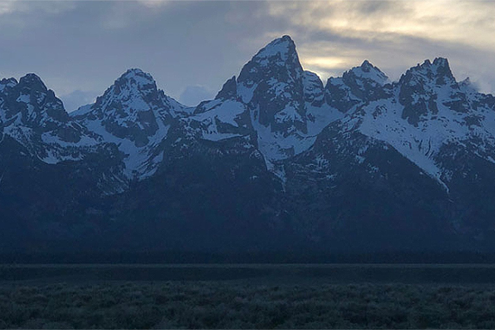

Lab 15: Fancy CSS
challenge
In this lab we experimented with new CSS tools to design our page.
problems
I had some problems with the gradient not covering the whole page and then it would add the gradient pattern a second time and it was not the look I wanted. However when I added content and the page lengthened the gradient reached smoothly from top to bottom.
results
I used new tools to design my web page such as a linear background gradient and image filters.
